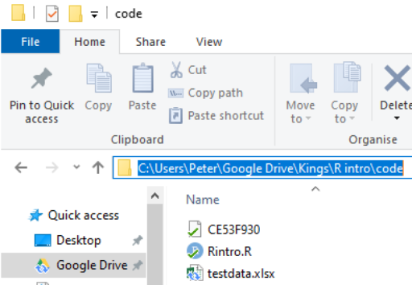

# This example shows how R can pull data directly from the internet
# tidy it and start making graphs. All within 9 lines of code
library(tidyverse)
education <- read_csv(
"https://barrolee.github.io/BarroLeeDataSet/BLData/BL_v3_MF.csv")
education %>%
filter(agefrom == 15, ageto == 24,
country %in% c("Germany","France","Italy","United Kingdom")) %>%
ggplot(aes(x=year, y=yr_sch, colour=country)) +
geom_point() +
geom_line()Introduction to R
This short course aims to take you through the process of writing your first programs in the R statistical programming language to analyse national and international educational datasets. To do this we will be using the R Studio integrated development environment (IDE), a desktop application to support you in writing R scripts. R Studio supports your programming by flagging up errors in your code as you write it, and helping you manage your analysis environment by giving you quick access to tables, objects and graphs as you develop them. In addition, we will be looking at data analysis using the tidyverse code packages. The tidyverse is a standardised collection of supporting code that helps you read data, tidy it into a usable format, analyse it and present your findings.
The R programming language offers similar functionality to an application based statistical tool such as SPSS, with more of a focus on you writing code to solve your problems, rather than using prebuilt tools. R is open source, meaning that it is free to use and that lots of people have written code in R that they have shared with others. R statistical libraries are some of the most comprehensive in existence. R is popular1 in academia and industry, being used for everything from sales modelling to cancer detection.
Whilst it is possible to use R through menu systems and drop down tools, the focus of this course is for you to write your own R scripts. These are text files that will tell the computer how to go through the process of loading, cleaning, analysing and presenting data. The sequential and modular nature of these files makes it very easy to develop and test each stage separately, reuse code in the future, and share with others.
This booklet is written with the following sections to support you:
[1] Code output appears like thisCourier font indicates keyboard presses, column names, column values and function names.
<folder> Courier font within brackets describe values that can be passed to functions and that you need to define yourself. I.e. copying and pasting these code chunks verbatim won’t work!
Note
specifies things to note
Warning
gives warning messages
Important
highlights issues that might break your code
Tip
gives suggestions on how to do things in a better way
1 Getting set up
1.1 Installation for KCL staff
If you are a KCL staff member, you can install R and R Studio using the KCL self service application. If you are not a KCL staff member, please follow the instructions in the next section.
- Open the KCL self-service centre, and search for R and R Studio
- Search for “R binary” and install
- Search for “RStudio desktop” and install

1.2 Installation (on your own machine)
-
Install R (default settings should be fine)
Install RStudio, visit here and it should present you with the version suitable for your operating system.
(If the above doesn’t work follow the instructions here)
1.3 Setting up RStudio and the tidyverse
Open RStudio
-
On the bottom right-hand side, select Packages, then select Install, then type “tidyverse” into the Packages field of the new window:

Click Install and you should see things happening in the console (bottom left). Wait for the console activity to finish (it’ll be downloading and checking packages). If it asks any questions, type
Nfor no and press enter.-
Add a new R Script using the
 button
button
-
In the new R script, write the following:

-
Select all the lines and press
ControlorCommand ⌘andEnteron your keyboard at the same time. Alternatively, press the button
button
-
Check that you have the following in the console window (depending on your screen size you might have fewer columns):

Install the
arrowpackage, repeat step 2, above.Download the
PISA_student_2022_subset.parquetdataset from here and download it on your computer, make a note of the full folder location where you have saved this!
Note
If you need help with finding the full folder location of your file, often a hurdle for Mac users, go to Chapter 10
- Copy the following code and replace
<folder>with the full folder location of where your dataset was saved, make sure that you have.parqueton the end. And keep the(r"[ ]")! Make sure you run all the lines in the code below, including thelibrary(arrow)andlibrary(tidyverse)lines.
examples of what this should look like for PC and Mac
# For Pete (PC) the address format was:
PISA_2022 <- read_parquet(r"[C:\Users\Peter\KCL\MASTEMR\PISA_student_2022_subset.parquet]")
# For Richard (Mac) the address format was:
PISA_2022 <- read_parquet(r"[/Users/k1765032/Documents/Teaching/STEM MA/Quantitative module/Data sets/PISA_student_2022_subset.parquet]")If you can’t load the parquet file, you can load the data as an RDS file which takes longer, but should work if you are having problems with the arrow package. Download the data as an RDS file here
Then use the code below to load the RDS file:
- Underneath the code you have already written, copy the code below (you don’t have to write it yourself), and run it. Try and figure out what each line does and what it’s telling you.
library(tidyverse)
PISA_2022 %>%
mutate(maths_better = PV1MATH > PV1READ) %>%
select(CNT, ST004D01T, maths_better, PV1MATH, PV1READ) %>%
filter(!is.na(ST004D01T), !is.na(maths_better)) %>%
group_by(ST004D01T) %>%
mutate(students_n = n()) %>%
group_by(ST004D01T, maths_better) %>%
summarise(n = n(),
per = n/unique(students_n))That’s it, you should be set up!
Any issues, please drop a message on the Teams group, or mail peter.kemp@kcl.ac.uk and richard.brock@kcl.ac.uk
2 Starting to code
After adding a new R Script using the button  , there are four parts to R Studio’s interface. For the moment we are most interested in the Script file section, top left.
, there are four parts to R Studio’s interface. For the moment we are most interested in the Script file section, top left.

3 Your first program
3.1 Objects and instructions
In programming languages we can attach data to a name, this is called assigning a value to an object (you might also call them variables). To do this in R we use the <- arrow command. For example, I want to put the word "Pete" into an object called myname (note that words and sentences such as "Pete" need speech marks):
We can also perform quick calculations and assign them to objects:
Type the two examples above into your RStudio script file and check that they work. Adapt them to say your full name and give the number of MinutesInADay
Tip
Remember to select code and press control or command and Enter to run it
Objects can form part of calculations, for example, the code below shows how we can use the number HoursInYear to (roughly!) calculate the number of HoursInWeek:
Notice from the above we can perform the main arithmetic commands using keyboard symbols: + (add); - (minus); * (multiply); / (divide); ^ (power)
Objects can change values when you run code. For example in the code below:
What’s going on here?
- line 1 sets
ato equal 2000 (note: don’t use commas in writing numbersa <- 2,000would bring up an error), - line 2 sets
bto equal 5, - line 4 overwrites the value of
awith the value stored inb, making objectanow equal to 5 - line six is now
5 * 5
3.1.1 Questions
what are the outputs of the following code snippets/what do they do? One of the examples might not output anything, why is that? Type the code into your script file to check your answers:
code example 1
code example 2
code example 3
3.2 Naming objects
Correctly naming objects is very important. You can give an object almost any name, but there are a few rules to follow:
- Name them something sensible
- R is case sensitive,
myNameis not equal to (!=)myname - Don’t use spaces in names
- Don’t start a name with a number
- Keep punctuation in object names to underscore (
_and full stop.) e.g.my_name,my.name. - Stick to a convention for all your objects, it’ll make your code easier to read, e.g.
-
myName,yourName,ourName(this is camelCase 2) -
my_name,your_name,our_name(this is snake case)
-
Important
The actual name of an object has no effect on what it does (other than invalid names breaking your program!). For example age <- "Barry" is perfectly valid to R, it’s just a real pain for a human to read.
3.2.1 Questions
Which of these are valid R object names:
my_Numbermy-NumbermyNumber!first nameFIRSTnamei3namesnames3
Note
For more information on the R programming style guide, see this
3.4 Datatypes
We have already met two different datatypes, the character datatype for words and letters (e.g. "Peter") and the numeric datatype for numbers (e.g. 12). Datatypes tell R how to handle data in certain circumstances. Sometimes data will be of the wrong datatype and you will need to convert between datatypes.
weeks <- 4
days_in_week <- "7"
# we now attempt to multiply a number by a string
# but it doesn't work!
total_days <- weeks * days_in_week Error in weeks * days_in_week: non-numeric argument to binary operatorWhilst R will understand what to do when we multiply numbers with numbers, it gets very confused and raises an error when we try to perform an arithmetic operation using words and numbers.
To perform the calculation we will need to convert the days_in_week from a string to a number, using the as.numeric(<text>) command:
There is a logical datatype for boolean values of TRUE and FALSE. This will become a lot more useful later.
legs_snake <- FALSE # you can specify logical values directly
dogs_legs <- 4
legs_dog <- dogs_legs > 0 # or as part of a calculation
# Do dog's have legs?
print(legs_dog)[1] TRUEThere are actually three datatypes for numbers in R, numeric for most of your work, the rarer integer specifically for whole numbers and the even rarer complex for complex numbers. When you are looking at categorical data, factors are used on top of the underlying datatype to store the different values, for example you might have a field of character to store countries, factors would then list the different countries stored in this character field.
To change from one datatype to another we use the as.____ command: as.numeric(<text>), as.logical(<data>), as.character(<numeric>).
3.4.1 Questions
- Can you spot the error(s) in this code and fix them so it outputs: “July is month 7”?
- Can you spot the error(s) in this code and fix it?
- Can you spot the error(s) in this code and fix it?
Tip
If you want to find out the datatype of an object you can use the structure str command to give you more information about the object. In this instance chr means that month is of character datatype and num means it is of the numeric datatype.
4 Vectors
So far we have seen how R does simple calculations and prints out the results. Underlying all of this are vectors. Vectors are data structures that bring together one or data elements of the same datatype. E.g. we might have a numeric vector recording the grades of a class, or a character vector storing the gender of a set of students. To define a vector we use c(<item>, <item>, ...), where c stands for combine. Vectors are very important to R3, even declaring a single object, x <- 6, is creating a vector of size one. Larger vectors look like this:
You can quickly perform calculations across whole vectors:
[1] "f" "m" "m" "f" "m" "f" "m"[1] 6 5 5 2 8 6 9We can also perform calculations across vectors, in the example below we can find out which students got a better grade in Maths than in English.
# this compares each pair of values
# e.g. the first item in maths_grade (5) with
# the first item in english_grade (8)
# and so on
# This returns a logical vector of TRUE and FALSE
maths_grade > english_grade[1] FALSE FALSE TRUE FALSE TRUE FALSE FALSE# To work out how many students got a better grade
# in maths than in English we can apply sum()
# to the logical vector.
# We know that TRUE == 1, FALSE == 0,
# so sum() will count all the TRUEs
sum(maths_grade > english_grade)[1] 2# if you want to find out the average grade for
# each student in maths and english
# add both vectors together and divide by 2
(maths_grade + english_grade) / 2[1] 6.5 4.5 3.5 1.5 5.0 5.5 8.5# we can use square brackets to pick a value from a vector
# vectors start counting from 1, so students[1] would pick Joe
students[1][1] "Joe"# we can pass a numeric vector to a another vector to create a
# subset, in the example below we find the 3rd and 5th item
students[c(3,5)][1] "Mo" "Olu"# we can also use a vector of TRUE and FALSE to pick items
# TRUE will pick an item, FALSE will ignore it
# for each maths_grade > english_grade that is TRUE
# the name in that position in the student vector will be shown
students[maths_grade > english_grade][1] "Mo" "Olu"You should be careful when trying to compare vectors of different lengths. When combining vectors of different lengths, the shorter vector will match the length of the longer vector by wrapping its values around. For example if we try to combine a vector of the numbers 1 ot 10 with a two item logical vector TRUE FALSE, the logical vector will repeat 5 times: c(TRUE, FALSE, TRUE, FALSE, TRUE, FALSE, TRUE, FALSE, TRUE, FALSE). We can use this vector as a mask to return the odd numbers, TRUE means keep, FALSE means ignore:
nums <- c(1,2,3,4,5,6,7,8,9,10)
mask <- c(TRUE, FALSE)
# you can see the repeat of mask by pasting them together
paste(nums, mask) [1] "1 TRUE" "2 FALSE" "3 TRUE" "4 FALSE" "5 TRUE" "6 FALSE"
[7] "7 TRUE" "8 FALSE" "9 TRUE" "10 FALSE"[1] 1 3 5 7 9This might not seem very useful, but it comes in very handy when we want to perform a single calculation across a whole vector. For example, we want to find all the students who achieved grade 5 in English, the below code creates a vector of 5s the same size as english_grade:
# this can also be rewritten english_grade >= c(5)
# note, when we are doing a comparison, we need to use double ==
students[english_grade == 5][1] "Al"[1] "Al"
Important
When we are doing a comparison, we need to use double == equals sign. Using a single equals sign is the equivalent of an assignment = is the same as <-
Tip
There are several shortcuts that you can take when creating vectors. Instead of writing a whole sequence of numbers by hand, you can use the seq(<start>, <finish>, <step>) command. For example:
This allows for some pretty short ways of solving quite complex problems, for example if you wanted to know the sum of all the multiples of 3 and 5 below 1000, you could write it like this:
Another shortcut is writing T, F, or 1, 0 instead of the whole words TRUE, FALSE:
4.1 Questions
- Can you spot the three problems with this code:
answer
nums <- c(1,2,3,4,7,2,2)
#1 a vector is declared using c(), not v()
#2 3 should be numeric, so no need for speech marks
# (though technically R would do this conversion for you!)
sum(nums)
mean(nums)
# return a vector of all numbers greater than 2
nums[nums >= 2] #3 to pick items from another vector, use square brackets- Create a vector to store the number of glasses of water you have drunk for each day in the last 7 days. Work out:
- the mean average number of glasses for the week,
- the total number of glasses,
- the number of days where you drank less than 2 glasses (feel free to replace water with your own tipple: wine, coffee, tea, coke, etc.)
- Using the vectors below, create a program that will find out the average grade for females taking English:
5 Summary questions
Now you have covered the basics of R, it’s time for some questions to check your understanding. These questions will cover all the material you have read so far and don’t be worried if you need to go back and check something. Exemplar answers are provided, but don’t worry if your solution looks a little different, there are often multiple ways to achieve the same outcome.
- Describe three datatypes that you can use in your program?
- What are two reasons that you might use comments?
-
Which object names are valid?
my_nameyour nameour-nameTHYname
- Can you spot the four errors in this code:
- [Extension] Calculate the number of seconds since 1970.
6 Packages and libraries
R comes with some excellent statistical tools, but often you will need to supplement them with packages4 . Packages contain functionality that isn’t built into R by default, but you can choose to load or install them to meet the needs of your tasks. For example you have code packages to deal with SPSS data, and other packages to run machine learning algorithms. Nearly all R packages are free to use!
6.1 Installing and loading packages
To install a package you can use the package tab in the bottom right-hand panel of RStudio and follow the steps from Section 1.3. Alternatively you can install things by typing:
Note that the instruction is to install packages, you can pass a vector of package names to install multiple packages at the same time:
Once a package is installed it doesn’t mean that you can use it, yet. You will need to load the package. To do this you need to use the library(<package_name>) command, for example:
Important
Some packages might use the same function names as other packages, for example select might do different things depending on which package you loaded last. As a rule of thumb, when you start RStudio afresh, make sure that you load the tidyverse package after you have loaded all your other packages. To read more about this problem see ?@sec-QANDA
6.2 The Tidyverse
This course focuses on using the tidyverse; a free collection of programming packages that will allow you to write code that imports data, tidys it, transforms it into useful datasets, visualises findings, creates statistical models and communicates findings to others data using a standardised set of commands.

For many people the tidyverse is the main reason that they use R. The tidyverse is used widely in government, academia, NGOs and industry, notable examples include the Financial Times and the BBC. Code in the tidyverse can be (relatively) easily understood by others and you, when you come back to a project after several months.
Note
Try this out
The code above transforms data and converts it into a graph. It doesn’t have any comments, but you should hopefully be able to understand what a lot of the code does by just reading it. Can you guess what each line does? Try running the code by selecting parts of it and pressing control | command ⌘ and Enter
7 Loading data
We can’t do much with R without loading data from elsewhere. Data will come in many formats and R should be able to deal with all of them. Some of the datasets you access will be a few rows and columns; others, like the ones we are going to use on this course, might run into hundreds of thousands or even millions of rows and hundreds or thousands of columns. Depending on the format you are using, you might need to use specific packages. A few of the data file types you might meet are described below:
| File type | Description |
|---|---|
| Comma separated values [.csv] | As it says in the name, .csv files store data by separating data items with commas. They are a common way of transferring data and can be easily created and read by Excel, Google spreadsheets and text editors (in addition to R). CSVs aren’t compressed so will generally be larger than other file types. They don’t store information on the types of data stored in the file so you might find yourself having to specify that a date column is a date, rather than a string of text. You can read and write csv files without the need to load any packages, but if you do use readr you might find things go much faster. |
| Excel [.xls | .xlsx | .xlsxm] | Excel files store data in a compressed custom format. This means files will generally be smaller than CSVs and will also contain information on the types of data stored in different columns. R can read and write these files using the openxlsx package, but you can also use the tidyverse’s readxl for reading, and writexl for writing for excel formats. |
| R Data [.rds] | R has it’s own data format, .rds. Saving to this format means that you will make perfect copies of your R data, including data types and factors. When you load .rds files they will look exactly the same as when you saved them. Data can be highly compressed and it’s one of the fastest formats for getting data into R. You can read and write .rds files without the need to load any packages, but using the functions in readr might speed things up a bit. You won’t be able to look at .rds files in other programs such as Excel |
| Arrow [.parquet] | Apache Arrow .parquet is a relatively new format that allows for the transfer of files between different systems. Files are small and incredibly fast to load, whilst looking exactly the same as when you save them. The PISA data set used here, that takes ~20 seconds to load in .rds format, will load in less than 2 seconds in .parquet format. Because of the way that data is stored you won’t be able to open these files in programs such as Excel. You will need the arrow package to read and write .parquet files. |
| SPSS [.sav] | SPSS is a common analysis tool in the world of social science. The native format for SPSS data is .sav. These files are compressed and include information on column labels and column datatypes. You will need either the haven or foreign packages to read data into R. Once you have loaded the .sav you will probably want to convert the data into a format that is more suitable for R, normally this will involve converting columns into factors. We cover factors in more detail below. |
| Stata [.dta] |
haven or foreign packages to read data into R |
| SAS [.sas] |
haven or foreign packages to read data into R |
| Structured Query Language [.sql] | a common format for data stored in large databases. Normally SQL code would be used to query these, you can use the tidyverse to help construct SQL this through the package dbplyr which will convert your tidyverse pipe code into SQL. R can be set up to communicate directly with databases using the DBI package. |
| JavaScript Object Notation [.json] |
.json is a popular format for sharing data on the web. You can use jsonlite and rjson to access this type of data |
For this course we will be looking at .csv, excel, .rds and parquet files.
8 Dataframes
Loading datasets into R will normally store them as dataframes (also known as tibbles when using the tidyverse). Dataframes are the equivalent of tables in a spreadsheet, with rows, columns and datatypes.
PISA_2022 %>%
select(CNT, PV1MATH, ESCS, IC172Q01JA) %>%
mutate(CNT = CNT %>% as.character()) %>%
head(5)# A tibble: 5 × 4
CNT PV1MATH ESCS IC172Q01JA
<chr> <dbl> <dbl> <fct>
1 Albania 180. 1.11 Agree
2 Albania 308. -3.05 Strongly disagree
3 Albania 268. -0.187 <NA>
4 Albania 273. -3.22 Disagree
5 Albania 435. -1.05 Agree The table above has 4 columns, each column has a datatype, CNT is a character vector, PV1MATH is a double (numeric) vector, ESCS is a double (numeric) vector and IC172Q01JA is a factor. For more about datatypes, see Section 3.4
Tip
Core to the tidyverse is the idea of tidy data, a rule of thumb for creating data sets that can be easily manipulated, modeled and presented. Tidy data are data sets where each variable is a column and each observation a row.
This data isn’t tidy data as each row has contains multiple exam results (observations):
| ID | Exam 1 | Grade 1 | Exam 2 | Grade 2 |
|---|---|---|---|---|
| R2341 | English | 4 | Maths | 5 |
| R8842 | English | 5 |
This dataframe is tidy data as each student has one entry for each exam:
| ID | Exam | Grade |
|---|---|---|
| R2341 | English | 4 |
| R2341 | Maths | 5 |
| R8842 | English | 5 |
First we need to get some data into R so we can start analysing them. We can load large datatables into R by either providing the online web address, or by loading it from a local file directory on your hard drive. Both methods are covered below:
9 Loading data from the web
To download files from the web you’ll need to find the exact location of the file you are using. For example below we will need another package, openxlsx, which you need to install before you load it (see: Section 1.3, or use line 1 below). The code shown will download the files from an online Google drive directly into objects in R using read.xlsx(<file_web_address>, <sheet_name>):
Tip
To convert data on your google drive into a link that works in R, you can use the following website: https://sites.google.com/site/gdocs2direct/. Note that not all read/load commands in R will work with web addresses and some will require you have to copies of the data sets on your disk drive. Additionally, downloading large data sets from the web directly into R can be very slow, loading the data set from your hard drive will nearly always be much faster.
10 Loading data from your computer
Downloading files directly from web addresses can be slow and you might want to prefer to use files saved to your computer’s hard drive. You can do this by following the steps below:
Download the PISA_student_2022_subset.parquet file from here and save it to your computer where your R code file is.
Note
The PISA student dataset is huge, with over 1,200 pieces of information stored on 600,000+ students. This book uses a subset of this data, but if you do want the full dataset, you can download it from here
Copy the location of the file (see next step for help)
-
To find the location of a file in Windows do the following:
-
Navigate to the location of the file in Windows Explorer:

-
Click on the address bar

Copy the location
-
-
To find the location of a file in Mac OSX do the following:
Open Finder
Navigate to the folder where you saved the file
-
Right click on the name of the file, then press the option
⌥(orAlt) button and selectCopy <name of file> as Pathname Alternatively, follow this
To load this particular data into R we need to use the read_parquet command from the arrow package, specifying the location and name of the file we are loading. See the following code:
11 Setting working directories
Using the setwd(<location>) you can specify where R will look by default for any datasets. In the example below, the dfe_data.xlsx will have been downloaded and stored in C:/Users/Peter/code. By running setwd("C:/Users/Peter/code") R will always look in that location when trying to load files, meaning that read_parquet(r"[C:/Users/Peter/code/PISA_student_2022.parquet]") will be treated the same as read_parquet(r"[PISA_student_2022.parquet]")
To work out what your current working directory is, you can use getwd().
11.1 Proper addresses
You might have found that you get an error if you don’t convert your backslashes \ into forwardslashes /. It’s common mistake and very annoying. In most programming languages a backslash signifies the start of a special command, for example \n signifies a newline.
With R there are three ways to get around the problem of backslashes in file locations, for the location:"C:\myfolder\" we could:
- replace them with forwardslashes (as shown above):
"C:/myfolder/" - replace them with double backslashes (the special character specified by two backslashes is one backslash!):
"C:\\myfolder\\" - use the inbuilt R command to deal with filenames:
r"[C:\myfolder\]"
12 .parquet and .feather files
For the majority of this workbook you will be using a cut down version of the PISA_2022 student table. This data set is huge and we have loaded it into R, selected fields we think are useful, converted column types to work with R and saved in the .parquet format. .parquet files are quick to load and small in size. To load a .parquet file you can use the read_parquet(<location>) command from the arrow package.
If you want to save out any of your findings, you can use write_parquet(<object>, <location>), where object is the table you are working on and location is where you want to save it.
.parquet files use a column based storage system, which means that they are very quick to load as they can use multiple processors when loading data, you can also specify which columns you want to load when loading the data using the col_select = attribute, meaning you don’t have to waste time loading all columns then de-selecting those you don’t want:
.parquet files are compressed meaning the files will also be small as well as fast. If speed is your real focus, you might want to use .feather files instead. They have the same functionality as .parquet files, but are even faster to load. You can use the read_feather and write_feather commands from the arrow package to load and save .feather files.
13 .csv files
A very common way of distributing data is through .csv files. These files can be easily compressed and opened in common office spreadsheet tools such as Excel. To load a .csv we can use read_csv("<file_location>") from the tidyverse. There is also the similarly named read.csv("<file_location>") but this is slower.
You might want to save your own work as a .csv for use later or for manipulation in another tool e.g. Excel. To do this we can use write_csv(<your_data>, "<your_folder><name>.csv"). NOTE: don’t forget to add .csv to the end of your “
14 SPSS / .sav
SPSS is a common tool in social science and psychology. The data format used by SPSS is .sav. These files can be loaded directly into R using the haven package’s read_sav command:
.sav files can look very different to your standard R data frame. They will contain information on the types of data stored in each column, as well as the labels for each column. You can see this information by using the attributes command:
15 .xml
16 .json
17 Writing excel files
You might prefer to save your results in an Excel file, this can be done using the write.xlsx command from the openxlsx package. This command will save your data frame as an Excel file in the location you specify:
Alternatively, you might want to create a new excel file with multiple sheets. openxlsx allows you to do this by creating a workbook, adding named sheets to it and then saving it:
library(openxlsx)
# get data
df_UK <- PISA_2022 %>%
filter(CNT=="UK") %>%
select(CNT, PV1MATH, PV1READ, PV1SCIE)
df_France <- PISA_2022 %>%
filter(CNT=="France") %>%
select(CNT, PV1MATH, PV1READ, PV1SCIE)
# create an empty workbook
wb <- createWorkbook()
# add two empty worksheets
addWorksheet(wb, "UK data")
addWorksheet(wb, "France data")
# add data to sheet: UK data
writeData(wb, "UK data", df_UK)
# add data to sheet: France data
writeData(wb, "France data", df_France)
# save the workbook to your computer
saveWorkbook(wb, "<your_folder>/my_workbook.xlsx")openxlsx does a lot more, including allowing you to format cells.
Footnotes
As of December 2022, Tiobe has R as the 11th most popular programming language. Many other, contradictory, ranking systems exist.↩︎
camelCasehas a capital letter in the front or front and middle forming the camel’s hump(s), there are multiple naming conventions, it doesn’t matter which you pick, just stick to one of them.↩︎R was created to allow for vector programming, that is a programming language where you can apply operations to entire sets of values (vectors) at the same time, rather than having to cycle through them individually. Vector languages work in a way that is close to how mathematical notation works, making them well suited for performing mathematical functions.↩︎
You’ll sometimes see the words package and library used interchangeably, technically the library is the place where the packages are stored.↩︎
3.3 Comments
Code can often look confusing and it’s a good idea to add
# commentsto your code to make it more understandable for you and others. The computer ignores comments when running your code: